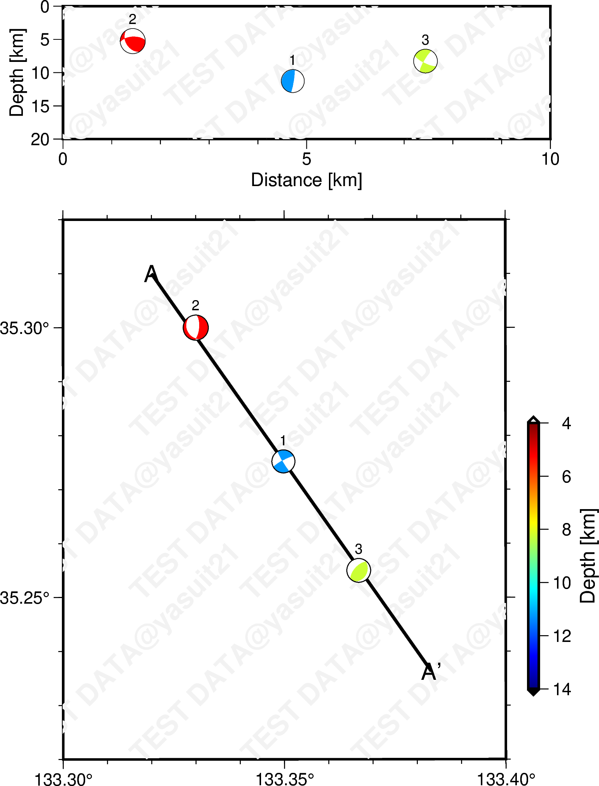

gmt coupeをPyGMTでも使いたい！

2023年9月現在，GMTの
coupe
コマンドは
PyGMT
で実装されていないため，そのラッパーもどきを作成してみた．coupeは震源メカニズム解のビーチボールを他の視点から描画するコマンドで，特に深さ断面に投影する際に用いられる．そのため，PyGMTで統一的に描画することを検討するなら，coupeも何とか使えるようにしたい．
今回はPyGMTの内部を探り，pygmt.Figureオブジェクトに直接作用する関数を作成して，深さ断面への震源メカニズム解の投影を実現したい．
はじめに
地震学では，震源情報や観測点情報などの描画に地図描画プログラムの GMT (Generic Mapping Tools) を用いることが多く，様々な地図描画法に対応している．GMTは直交座標系でのプロットにも対応しているため，地図だけではなく，一般的な図の作成にも使える有用なツールである．
しかし，GMTのコマンドは直感的に分かりにくい1．①コマンドライン（シェルスクリプト）で実行してPostScriptファイルを作成し，GhostScriptで描画するといった手間が多く，微調整に時間が掛かる．また，②各コマンドの引数が全てアルファベットで始まるキーワードと文字列のペアで，しかもコマンド毎に異なっている．覚えれば良いのはごもっともだが，慣れるまでおまじないを唱えているような錯覚に陥る （未だにおまじないを唱えている）．
最近GMTのPythonラッパーとして登場した PyGMT は，特にJupyter Notebookなどと組み合わせることで，インタラクティブな描画を実現した．シェルスクリプトを実行してPSファイルを作成し，それをGhostScriptで開いて確認する，などという煩わしさは無い．また，引数がよりPythonicなキーワードとなるため，コードの直感的理解がしやすい．
とはいえ，PyGMTは絶賛開発中のツールであることから，GMTのコマンド全てをサポートできているわけではない．メカニズム解のビーチボールを他の視点，特に深さ断面に描画する
coupe
コマンドは，2023年9月現在PyGMTで実装されていない．また，gridデータを補間してくれる
grdinterpolate
コマンドなんかもサポートされていない （ツラい）．PyGMTで使いたいが，どうすればよいか…？
grdinterpolateのようにデータ処理だけなら，普通にターミナルかスクリプトで回す．自分ならjupyter上で!gmt grdinterpolate ...と実行させるcoupeコマンドのようにメモリに保存させる場合は，1の方法は厳しそう．諦める？
…なら，PyGMTで使える関数を自作すれば良い！ということで，coupeコマンドのラッパーもどき2を作成してみた．とりあえず今回は，coupe コマンドをPyGMTでも使えるようにするという表向きの目的を立てつつ，PyGMTが内部でどのようにしてコマンドを呼び，引数を割り当てているかを調べることを副題としたい．
筆者 @yasuit21 (Y. Sawaki) は生GMTの経験に乏しいため，不正確な記載をしている可能性があります．真偽の程はご自身でお確かめいただければと思います．
作成したモジュールcoupe.pyについて
早速，今回作成したモジュールcoupe.pyは次の通り．関数coupe.coupe()をインポートすることで使用できる．
ただし，PyGMT v0.10.0以上で動作するため注意が必要である．
基本的には， meca.py をベースにして，引数の設定などを改変した．
coupe.pyは当ウェブサイトの管理人
@yasuit21
(Y. Sawaki) が
meca.py
をベースに新規作成したもので，PyGMTのプロジェクトに関連したものではありません．また，coupe.pyを使用したことによって発生する一切の問題に対して責任を負いませんので，使用される場合は自己判断でお願いします．
デコレータについて
デコレータは，def文の頭に付いている@funcのことで，関数を修飾する働きをする（詳しくは他のサイトで）．coupe()にも複数のデコレータを作用させているが，全てPyGMTから流用した（普通にimportしているだけ）．
- use_alias
- 関数名の通り，GMTのコマンドのオプション名とPyGMTの関数やメソッドの引数名を結ぶ
- kwargs_to_strings
- 指定したキーワードについては，文字列以外の入力も可能にする
- 例えば
@kwargs_to_strings(A="sequence")の場合，A="1/2/3"だけでなく，A=[1,2,3]とも記載できる．
コードの中で行われていること
まずは，メカニズム解の引数 メカニズム解を記載する記法が選択され， また，辞書形式の だと， のように，文字列はキーワードの直後に加えられ，リストやタプルなどの場合は，分割してそれぞれ付記される． 最終的には，知りたい方は折りたたみメニューを開いてください．
specを処理する．ファイルへのパスが記載されている場合は何もせず，それ以外の場合はpandas.DataFrame形式に変換する． # Convert spec to pandas.DataFrame unless it's a file
if isinstance(spec, (dict, pd.DataFrame)): # spec is a dict or pd.DataFrame
# determine convention from dict keys or pd.DataFrame column names
for conv in ["aki", "gcmt", "mt", "partial", "pricipal_axis"]:
if set(convention_params(conv)).issubset(set(spec.keys())):
convention = conv
break
...
# convert dict to pd.DataFrame so columns can be reordered
if isinstance(spec, dict):
spec = pd.DataFrame(
{key: np.atleast_1d(value) for key, value in spec.items()}
)
# Now spec is a pd.DataFrame or a file
if isinstance(spec, pd.DataFrame):
if longitude is not None:
spec["longitude"] = np.atleast_1d(longitude)
...
# Reorder columns in DataFrame to match convention if necessary
# expected columns are:
# longitude, latitude, depth, focal_parameters,
# [event_name]
newcols = ["longitude", "latitude", "depth"] + convention_params(convention)
if "event_name" in spec.columns:
newcols += ["event_name"]
# reorder columns in DataFrame
if spec.columns.tolist() != newcols:
spec = spec.reindex(newcols, axis=1)specはpandas.DataFrame形式に変換される．その後，イベント情報が別で与えられていた場合（longitudeなど），specを上書きする．そして，メカニズム解の列情報を再配置して，coupeコマンドに与えられるようにする．kwargsに，GMTコマンドのオプションを加えていく．例えば，kwargs["A"] = "132/33/134/35"-A132/33/134/35というオプションが追加されることになる．関数独自の引数についても，GMTのオプションの形になるよう処理が行われる．kwargsへの追加が終わったら，kwargsを
build_arg_string
関数にて文字列解析する．build_arg_stringによる解析例を見てみると，
370
371
372
373
374
375
376
377
378
build_arg_string(
dict(
R="1/2/3/4",
J="X4i",
B=["xaf", "yaf", "WSen"],
I=("1/1p,blue", "2/0.25p,blue"),
)
)
# -BWSen -Bxaf -Byaf -I1/1p,blue -I2/0.25p,blue -JX4i -R1/2/3/4Sessionにて，GMTのコマンドを呼び出す．
299
300
301
302
303
304
305
306
307
308
with Session() as lib:
# Choose how data will be passed into the module
file_context = lib.virtualfile_from_data(
check_kind="vector", data=spec
)
with file_context as fname:
lib.call_module(
module="coupe",
args=build_arg_string(kwargs, infile=fname)
)lib.virtualfile_from_dataではメカニズム解情報を読み込む．kwargsと共にそれらをbuild_arg_string()に投げることで，コマンドオプションを生成する．そして，コマンドオプションをlib.call_moduleに与えるとともに，module="coupe"を指定することで，coupeコマンドを呼び出している．
引数設定について
coupe.coupe()について，基本的には
Figure.meca
メソッドと共通の引数を与えることができる．相違点として，第1引数には必ず pygmt.Figure オブジェクトを指定する．これは，coupe.coupe()をFigureオブジェクトのメソッドとして取り込んでいないためである3．普通に関数として使えるだけで，お試しとしては妥協できるレベルだろう．
少し脱線したが，他に新しく作成した引数を紹介する．
section: gmt coupe でいうところの，Aオプションに対応する．つまり，作成する断面の切り口に対応する線分の情報を与える．例えば，線分の始点・終点における経度緯度を与える場合（Aaに対応），[lon1,lat1,lon2,lat2]といったリストや，"lon1/lat1/lon2/lat2"などの文字列を与える．どのオプションを取った場合でも，4つ以上の小数で構成される必要があるsection_format: Aオプションの小文字(a–d)オプションを指定する文字列．sectionに与えるリストはこの引数のフォーマットに従う"lonlat_lonlat": Aaに対応（デフォルト）．線分の始点・終点における経度緯度を与える"lonlat_strlen": Abに対応．線分の始点の経度緯度と走向(°)，長さ(km)を与える"xy_xy": Acに対応．線分の始点・終点における直交座標値を与える"xy_strlen": Adに対応．線分の始点の直交座標値と走向(°)，長さ(km)を与える
no_file: Qオプションに対応．Trueなどとすると，ファイル出力がなされない．
動作確認
PyGMT用の仮想環境を使用した．テストはUbuntu (WSL)で行っており，パッケージのバージョンは次の通り．
| Package | Version |
|---|---|
| Python | 3.10.12 (conda-forge) |
pygmt |
0.10.0 |
numpy |
1.25.2 |
pandas |
2.0.3 |
import sys
import numpy as np
import pandas as pd
import pygmt作成したcoupe.pyをインポートするために，ディレクトリをPYTHONPATHに一時的に追加する．
sys.path.append('/path/to/coupe_dir')
from coupe import coupe次に，メカニズム解のデータを作成する．実在しないデモデータを含むことに注意．
df_meca = pd.DataFrame(
[
[133.3498, 35.2752, 11.26, 150, 85, -9, 241, 81, -175, 4.97, 18,],
[133.33, 35.3, 5.26, 151, 29, -122, 5, 67, -74, 8.62, 18],
[133.3668, 35.255, 8.26, 223.5, 61.2, 98, 24.9, 30.3, 72.1, 6.12, 18],
],
columns=[
'longitude','latitude','depth',
'strike1','dip1','rake1','strike2','dip2','rake2',
"mantissa","exponent",
]
)| longitude | latitude | depth | strike1 | dip1 | rake1 | strike2 | dip2 | rake2 | mantissa | exponent | |
|---|---|---|---|---|---|---|---|---|---|---|---|
| 0 | 133.35 | 35.2752 | 11.26 | 150 | 85 | -9 | 241 | 81 | -175 | 4.97 | 18 |
| 1 | 133.33 | 35.3 | 5.26 | 151 | 29 | -122 | 5 | 67 | -74 | 8.62 | 18 |
| 2 | 133.367 | 35.255 | 8.26 | 223.5 | 61.2 | 98 | 24.9 | 30.3 | 72.1 | 6.12 | 18 |
では，メカニズム解のビーチボール（下半球投影）を地図上に描画してみよう．
fig = pygmt.Figure()
pygmt.config(
FONT_TITLE="15p,Helvetica,black",
MAP_FRAME_TYPE="plain",
MAP_FRAME_PEN="1.5p",
FORMAT_GEO_MAP="ddd.xx",
FONT_ANNOT="11p",
MAP_TICK_LENGTH="6p"
)
fig.basemap(
region=[133.3,133.4,35.22,35.32],
projection="T133.25/10c",
frame=["WSne","xa0.05f0.01", "ya0.05f0.01"],
)
center = [133.32,35.31]
azimuth = 145
# Cross section
lineA = pygmt.project(
generate='5k',
center=center,
azimuth=azimuth,
length=[0,10],
unit=True
)
fig.plot(
lineA,
pen='2p'
)
fig.text(x=lineA[:1].r,y=lineA[:1].s,text='A',font='15p')
fig.text(x=lineA[-1:].r,y=lineA[-1:].s,text='A\'',font='15p')
pygmt.makecpt(cmap='jet', series=[4,14], reverse=True)
fig.colorbar(frame='xa2+lDepth [km]', position="JMR+o0.5c/-1.5c+w-6c+ebf",)
# Plot focal mecanisms on the map
fig.meca(
df_meca,
scale="1.5c",
cmap=True,
pen="0.5p,black,solid",
transparency=30,
event_name=['1','2','3'],
)
# Cross-sectional view on the top panel
fig.shift_origin(yshift="14.c")
fig.basemap(
region=[0, 10, 0, 20], # x_min, x_max, y_min, y_max
projection="X11c/-3c",
frame=["WSrt", "xa5f1+lDistance [km]", "ya5+lDepth [km]"],
)
# Plot focal mecanisms on the cross section
coupe(
fig, # the first argument must be a Figure object
spec=df_meca, # dataframe of mechanisms
scale="1.5c",
section=center+[azimuth,10], # initial point, strike, length
section_format='lonlat_strlen', # "Ab" option
cmap=True,
no_file=True, # creates no output file
)
fig.show()
下段の図はmap viewで，
Figure.meca
メソッドを使用した．上段の図は深さ断面を示し，今回作成したモジュールcoupe.pyの関数coupe()を使用した（ハイライト部）．
上手く深さ断面に投影できているようだ（多分）．
なお，作成したcoupe.pyとCoupe_in_PyGMT.ipynbは，
GitHub Gist
から確認できる．
まとめ・展望
- PyGMTでも gmt coupe コマンドが使えるように， coupe.py モジュールを作成した
coupe.coupe()を使えば，メカニズム解の深さ断面投影はシンプルな記述で実現できるFigureの継承クラスを作成し，coupe.coupe()をクラスのメソッドにしてしまえば，よりPyGMTらしい記載ができるだろう（今回はそこまでやっていない）- PyGMTの方でも，GMTのモジュールを随時Wrapしていくとのことで，coupeもその中に含まれているようだ4（2023年9月現在）．そのため，今回作成した
coupe.pyについては，特にPR等することなく個人ベースで使っていく方針で良さそうだ（プロの質には全く適わん）．とりあえず，PyGMTの開発グループには感謝したいと思う．
参考文献
- The Generic Mapping Tools Documentation
- PyGMT - A Python interface for the Generic Mapping Tools
- gmt coupeの使い方 | はじめよう！GMT6
- GMT for Seismology: Plotting beachballs | GenericMappingTools
余談
PyGMTがサポートしているのは，GMT6系（2023年9月現在）なので，その前提で記載しています．現在の主流がどうかは知りませんが，GMT4を使っている研究者は一定数いると思います．自分はGMT4系，5系ともに全く分かりませんが，これらの古いGMTを使っている方がPyGMTを触るなら，「GMTとは別物！」くらい割り切った方が良いかもしれません．関数名も結構GMTと異なっていたりするので5．